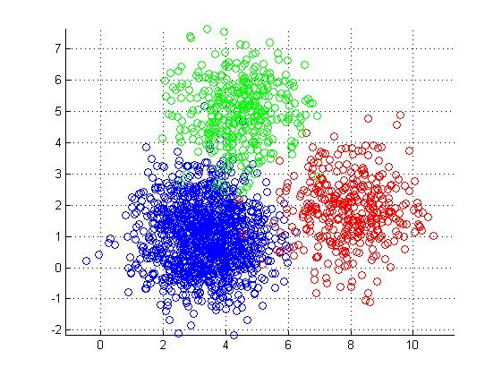
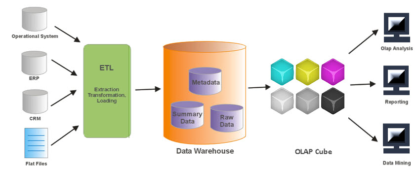

Work Experience
Unum Group (Jul'21 - Dec'21)
Portland, Maine, USA
Data Science and Analytics Coop
Eletech Engineering (Jan'20 - Jun'20)
Indore, MP, India
Data Science Intern
Aam Aadmi Party (Jul'19 - Sep'19)
New Delhi, Delhi, India
Data Analytics Intern
Education

Northeastern University, Boston
MS (Data Analytics Engineering)
Sep'20 - July'22
Medi-Caps University, Indore
B.Tech. (Computer Science Engineering)
Aug'16 - July'20
Skills and Tools
Programming
- Python
- R Programming
- SQL
- C
- Scala
- Git
Databases
- MySQL
- Postgres
- MSSQL
- MongoDB
- Apache Cassandra
- AWS S3
Cloud and Tools
- Airflow
- Snowflake
- Kubernetes
- PySpark
- Kafka
- Redshift
Data Viz and Others
- Tableau
- SSMS
- Flourish
- Alteryx
- Seaborn
- Matplotlib
My Favorite Projects
Check out my GITHUB for more work!
Image colorization using GANs
A project undertaken with my groupmates wherein we used GAN on black and white images to produced their colored outcomes. I contributed to the discriminator network.
UniMatch - A friend maker via K-Means Clustering

I programmed this web application backed up by Flask backend, SQLite database, and python for K-means clustering model. The aim was to make a friend finder tool for my university students.
SparkiFy App Data Warehouse and ETL on AWS

An ETL pipeline which is hosting Sparkify user data as a datalake hosted on AWS S3 backed up by PySpark. The aim of the project is to extract data from S3 using a python script, perform transformation operations and then again host it on S3. Furthermore, the spark process is deployed on AWS.
Fake News Classifier using Bi-LSTM Network
The dataset for this project was taken via a Kaggle competition. The dataset was a supervised data, consisiting of tweets, the timestamp, and the target variable. After data preprocessing with pandas and NLTK, I went ahead with LSTM as well as BiLSTM models, which I programmed with tensorflow.